<style> .reveal section img { background:none; border:none; box-shadow:none; } #left { margin: 10px 0 15px 20px; text-align: center; float: left; z-index:-10; width:48%; font-size: 0.85em; line-height: 1.5; } #right { margin: 10px 0 15px 0; float: right; text-align: center; z-index:-10; width:48%; font-size: 0.85em; line-height: 1.5; } </style> # Unidad 5: Tipos de transistores <span style="font-size: 20.0pt; "> **Profesor:** Ing. Israel Chaves Arbaiza </span> <span style="font-size: 20.0pt;"> **Curso**: Electrónica Básica para Ing. Mecánica </span> <img width="900" height="130" src="media/logo_slides.jpg"> --- ## Objetivos de la clase <span style="font-size: 22.0pt; "> * Conocer el transistor de monounión * Dominar el comportamiento del Rectificador Controlado de Silicio * Aplicar el diodo Shockley junto con el DIAC en circuitos de control * Comprender el uso del DIAC y el TRIAC en conjunto </span> --- ## Transistor Monounión UJT <span style="font-size: 22.0pt; "> Cuenta con **una sola unión NP**, y es útil ya que **absorbe poca potencia**. Se puede aplicar en: * Osciladores * Controles de fase * Temporizadores * Circuitos de disparo * Fuentes reguladas por corriente o voltaje 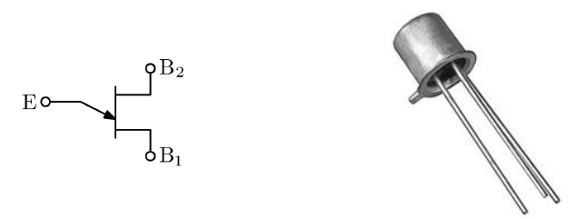 </span> --- ## Transistor Monounión UJT <span style="font-size: 20.0pt; "> * Una pastilla de material de silicio **tipo N** levemente dopada ( resistencia incrementada) tiene dos contactos base fijados a los dos extremos de una superficie y una barra de aluminio **tipo P** ligada a la superficie opuesta. * Se activa con un voltaje 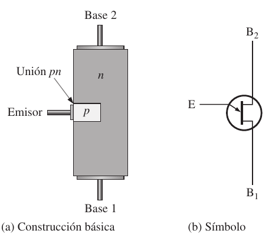 </span> --- ## Transistor Monounión UJT <span style="font-size: 20.0pt; "> * El circuito equivalente del UJT equivale a dos resistores (uno fijo y uno variable) y un diodo único. * La resistencia $R_{B1}$ se muestra como un resistor variable puesto que su magnitud variará con la corriente $I_E$ 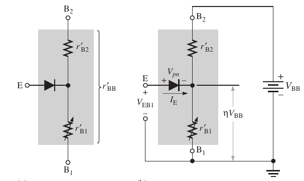 </span> --- ## Transistor Monounión UJT <span style="font-size: 22.0pt; "> * Para un transistor de monounión representativo, $R_{B1}$ , puede variar de $5 k\Omega$ a $50 \Omega$ por un cambio correspondiente de $I_E$ a partir de $0 \mu A$ a $50 \mu A$. * La resistencia entre las bases $R_{BB}$ es la resistencia del dispositivo entre las terminales $B_1$ y $B_2$ cuando $I_{E} = 0$. 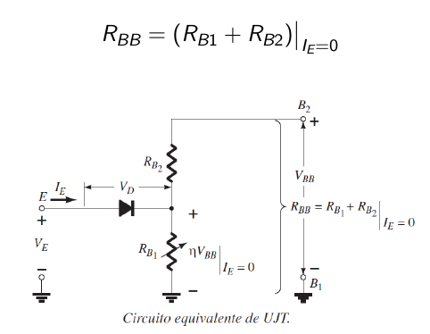 </span> --- ## Transistor Monounión UJT <span style="font-size: 20.0pt; "> * $R_{BB}$ oscila de $4 k\Omega$ a $10 k\Omega$. * La posición de la barra de aluminio determina los valores de $R_{B1}$ y $R_{B2}$ con $I_{E}= 0$. * La magnitud de $V_{R_{B1}}$ (con $I_{E}= 0$) la determina la regla del divisor de voltaje. * La letra griega $\eta (eta)$ denota la **ganancia** del dispositivo. 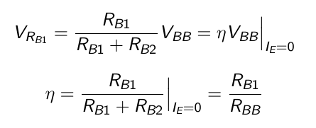 </span> --- ## Transistor Monounión UJT <span style="font-size: 20.0pt; "> En potenciales de emisor aplicados, $V_E$, mayores a la suma de $V_{R_{B1}}$ (= $\eta V_{BB}$ ) y la caída del voltaje directa del diodo $V_D$ (0.35 $\rightarrow $0.70 V) el diodo se encenderá. El potencial de encendido es $$ V_{P}=\eta V_{BB} + V_D $$ 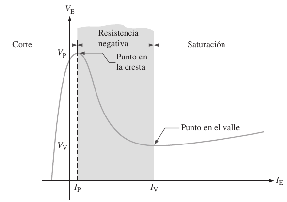 </span> --- ## Transistor Monounión UJT <span style="font-size: 20.0pt; "> $I_{EO}$ ($mA$) no se muestra puesto que la escala horizontal está en miliamperes. La intersección de cada curva con el eje vertical es el valor correspondiente de $V_P$ . Para valores fijos de $\eta$ y $V_D$ , la magnitud de $V_P$ variará como $V_{BB}$ . 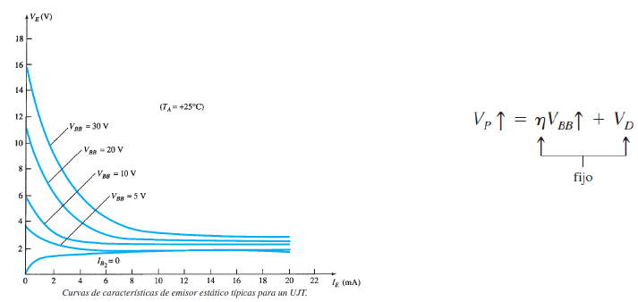 </span> --- ## Rectificador Controlado de Silicio SCR <span style="font-size: 18.0pt; "> Presentado por *Bell Telephone Laboratories* en 1956; se utiliza para controlar la activación de dispositivos, **a manera de interruptor**. Han sido diseñados para **controlar potencias altas**, como 10 MW, con valores nominales individuales hasta de 2000 A a 1800 V. Su intervalo de frecuencia de aplicación ronda los 50 kHz, lo que permite que se utilice para calefacción por inducción ó limpieza ultrasónica. 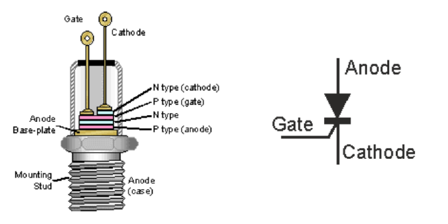 </span> --- ## Rectificador Controlado de Silicio SCR <span style="font-size: 20.0pt; "> El SCR es un rectificador, construido de silicio con una tercera terminal para propósitos de control. Se escogió el silicio por sus altas capacidades de temperatura y potencia. La tercera terminal, llamada **Compuerta** , determina cuándo el rectificador cambia de abierto a cortocircuito. 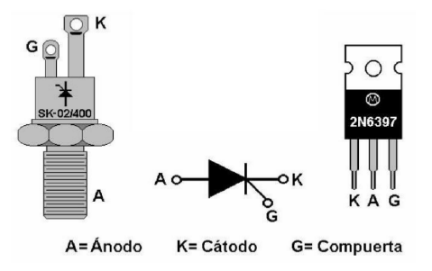 </span> --- ## Rectificador Controlado de Silicio SCR <span style="font-size: 18.0pt; "> En la región de conducción, cuando está en cortocircuito, la resistencia dinámica del SCR está entre los $0,01 \Omega$ y los $0,1 \Omega$. Por el contrario, la resistencia inversa, suele ser de $100 k\Omega$ ó más. Para que se establezca la conducción directa: 1. Se debe aplicar un pulso de magnitud suficiente a la compuerta, para establecer el encendido en la compuerta. 2. El ánodo debe tener un voltaje positivo respecto al cátodo, y la corriente debe ingresar por el ánodo. 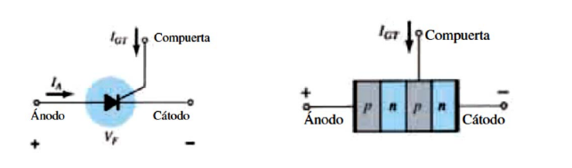 </span> --- ## Rectificador Controlado de Silicio SCR <span style="font-size: 20.0pt; "> El circuito equivalente del SCR, se representa con 2 transistores BJT, uno de tipo PNP y el otro tipo NPN. 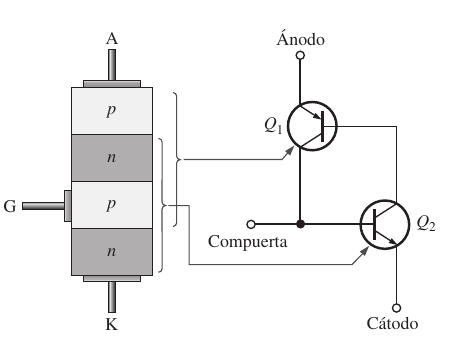 </span> --- ## Rectificador Controlado de Silicio SCR <span style="font-size: 20.0pt; "> Su comportamiento, incluyendo el disparo, se observa en la siguiente imagen: 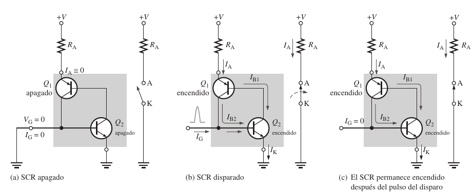 </span> --- ## Rectificador Controlado de Silicio SCR <span style="font-size: 20.0pt; "> Los tiempos de encendido de un SCR, varían según las corrientes que controle: * Para dispositivos de baja potencia, los tiempos de encendido típicos rondan de $0,1 \mu s$ a $1 \mu s$ * Mientras que para corrientes entre 100 A y 400 A, pueden tener tiempos de 10 a 25 $\mu s$ 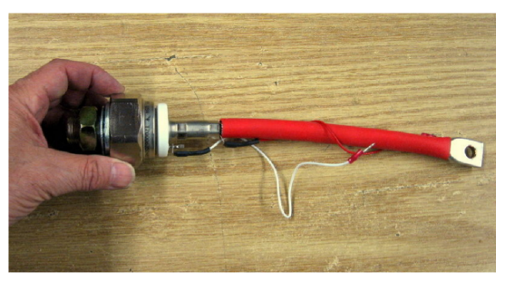 </span> --- ## Rectificador Controlado de Silicio SCR <span style="font-size: 18.0pt; "> Para apagar el SCR, la única manera es quitar la corriente del Ánodo, para ello existen 2 métodos: 1. **Interrupción de corriente en el ánodo**, donde por algún tipo de interruptor, se quita la corriente que entra al ánodo. 2. **Conmutación forzada**, acá el interruptor se ubica en paralelo al SCR, en lugar de ubicarlo en serie. Este método es el preferido, más eficiente y seguro. 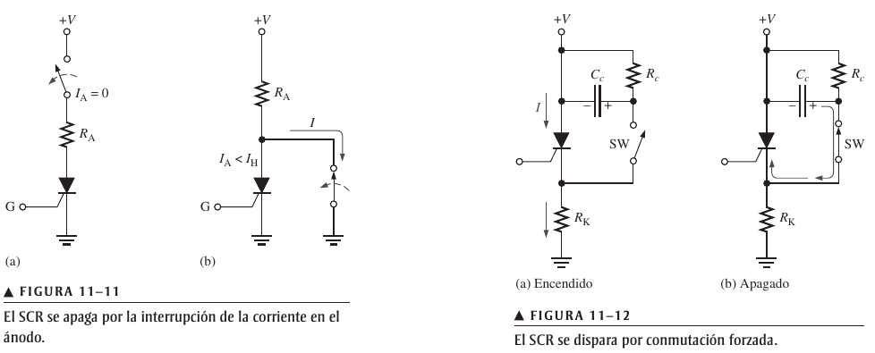 </span> --- ## Rectificador Controlado de Silicio SCR <span style="font-size: 20.0pt; "> Las gráficas de comportamiento del SCR, con y sin disparo, se muestran a continuación: 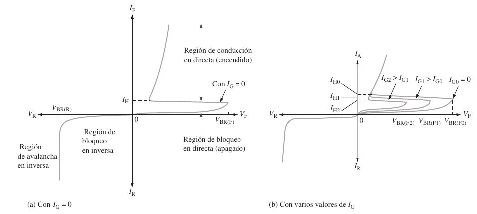 </span> --- ## Rectificador Controlado de Silicio SCR <span style="font-size: 20.0pt; "> <iframe width="580" height="500" src="https://www.falstad.com/circuit/circuitjs.html?ctz=CQAgjCAMB0l3BWcMBMcUHYMGZIA4UA2ATmIxAUgoqoQFMBaMMAKACcRs8AWcQqrr2KEoySCwBKnHiGHTeeKkpDdaopdAQsAzvJAo8ePdkJGqEAGYBDADba6OzghT6EIlG9cjzIa3YccHiJgGO6eQaJgcJJe4KGxYAbqKmrKMFoA5samxjJKLCHkgnwCOQZmIAzc0NzE3GAEiiYEhNjYGIxg2JXVtfWNkM1EbR1M3TCQEBP4LpQsQA" title="YouTube video player" frameborder="0" allow="accelerometer; autoplay; clipboard-write; encrypted-media; gyroscope; picture-in-picture" allowfullscreen></iframe> </span> --- ## Diodo Shockley <span style="font-size: 20.0pt; "> Es un diodo **PNPN** de cuatro capas, pero con sólo dos terminales externas. Sus características son las mismas que el SCR, pero con $I_G = 0$ El dispositivo estará en abierto (*apagado*) hasta que se alcance su voltaje de conducción, en ese momento, entra en cortocircuito (*encendido*) 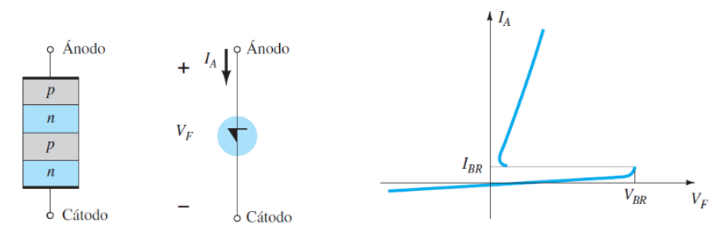 </span> --- ## Aplicación de Shockley como interruptor <span style="font-size: 20.0pt; "> Comúnmente, el Shockley se usa como interruptor de disparo para un SCR. Cuando se energiza el circuito, el voltaje en el capacitor comienza a cargarlo, hasta llegar al voltaje necesario para activar el diodo; y en consecuencia, se dispara el SCR. 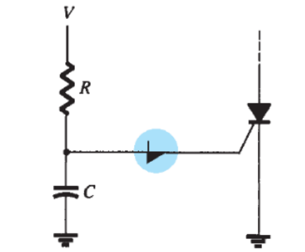 </span> --- ## DIAC <span style="font-size: 20.0pt; "> Es una combinación inversa en paralelo de dos terminales de capas semiconductoras que permiten la activación ó disparo en cualquier dirección. Se puede aprovechar al máximo la condición de encendido en cualquiera de las dos direcciones en aplicaciones de CA. 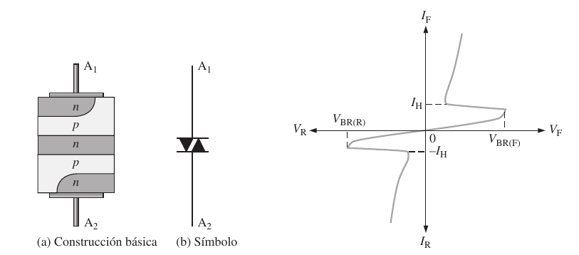 </span> --- ## DIAC <span style="font-size: 20.0pt; "> Ninguna de las capas se designa como cátodo, cuando el ánodo 1 es positivo respecto al ánodo 2, el ánodo 2 se comporta como cátodo, y viceversa. 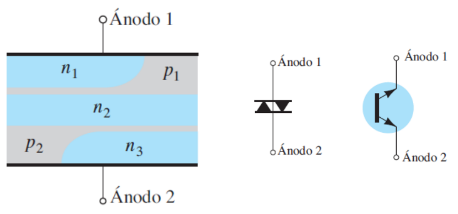 </span> --- ## DIAC <span style="font-size: 20.0pt; "> Los voltajes de ruptura son muy parecidos en cuanto a magnitud, pero pueden variar desde un mínimo de 28 V y hasta un máximo de 42 V. Los niveles de corriente ($I_{BR1}$ e $I_{BR2}$) también son de magnitud muy parecida para cada dispositivo. 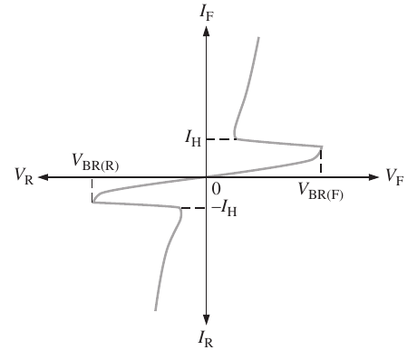 </span> --- ## TRIAC <span style="font-size: 20.0pt; "> Es básicamente un DIAC con una terminal de compuerta para controlar el encendido, ó lo que es igual, un SCR que puede trabajar en cualquiera de los semiciclos de CA. 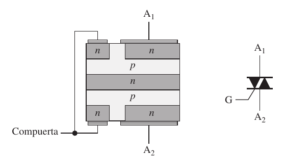 </span> --- ## TRIAC <span style="font-size: 20.0pt; "> 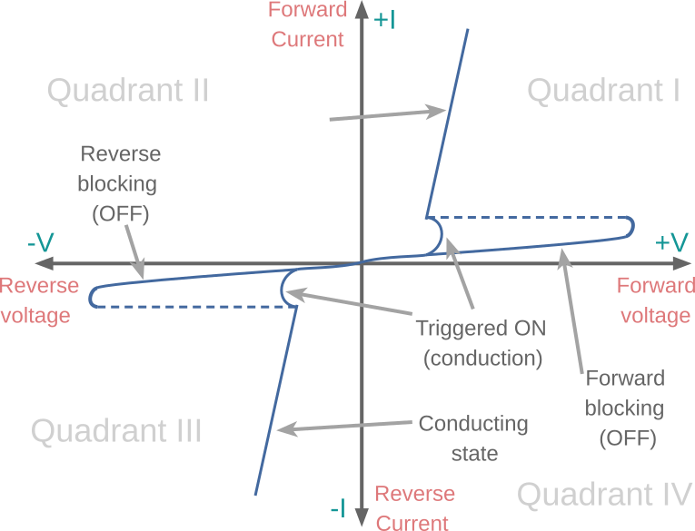 </span> --- ## Aplicación común: Control de fase (potencia) <span style="font-size: 20.0pt; "> Acá se controla la potencia de CA suministrada a la carga encendiéndose y apagándose durante las regiones positiva y negaiva de la señal senoidal de entrada. La acción de este circuito durante la parte positiva de la señal de entrada es muy parecida a la encontrada por el diodo Shockley. 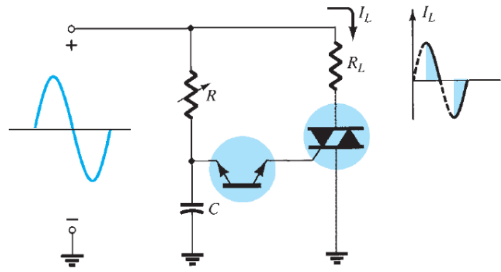 </span> --- ## Aplicación común: Control de fase (potencia) <span style="font-size: 20.0pt; "> La ventaja de esta configuración es que durante la parte negativa de la señal de entrada se obtendrá el mismo tipo de respuesta ya que tanto el DIAC como el TRIAC se pueden encender en la dirección inversa. Si se ajusta el R, podemos controlar el ángulo de conducción. Existen unidades disponibles capaces de manejar cargas de más de 10 kW. </span> --- ## Ejemplo DIAC y TRIAC <span style="font-size: 20.0pt; "> <iframe width="580" height="500" src="https://www.falstad.com/circuit/circuitjs.html?ctz=CQAgjCAMB0l3BWcAmWDLMgZgBxmcgCxg4CcS6IFkVApgLRhgBQA5uFgGw0LI4fcqhQlCjMA7ik4jkAdmQCachZGYAnKTPmaQhLCvCRO+deBJaF+aSGWi5qgEpmcFs1xvaaEQWE6lospAInHKELrKyYCI0MdAIzJicih6WWPhUfKIwkExQsJD8YHAgAC5qAK60zADGOnqWyNa8-LHwcBD0hNCkpJCECIHBQZCBpHntbDrNU8JZCdh1+hyZ9aLoXm1tIFitLAD2utsGYZyyR7EtNodYzLhXAGIQG0qYxYwgAAoAFgCGAM60AA6fwAwnsAHZlPYAG2YQA" title="YouTube video player" frameborder="0" allow="accelerometer; autoplay; clipboard-write; encrypted-media; gyroscope; picture-in-picture" allowfullscreen></iframe> </span> --- ## Notas importantes <span style="font-size: 20.0pt; "> * Los temas de la unidad 5 se pueden encontrar en el capítulo 11 del Floyd * Revisar especialmente los ejemplos 11-2, 11-3, y 11-4 </span> --- ## Ejemplo 1 <span style="font-size: 20.0pt; "> Explique el funcionamiento de este circuito. 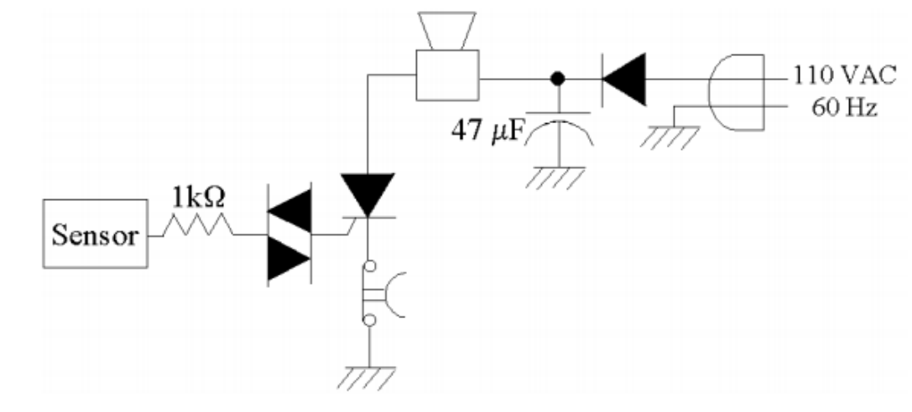 </span> --- ## Ejemplo 2 <span style="font-size: 20.0pt; "> ¿Cuál es la reacción del motor cuando se presionan las botoneras 1 y 2? Explique 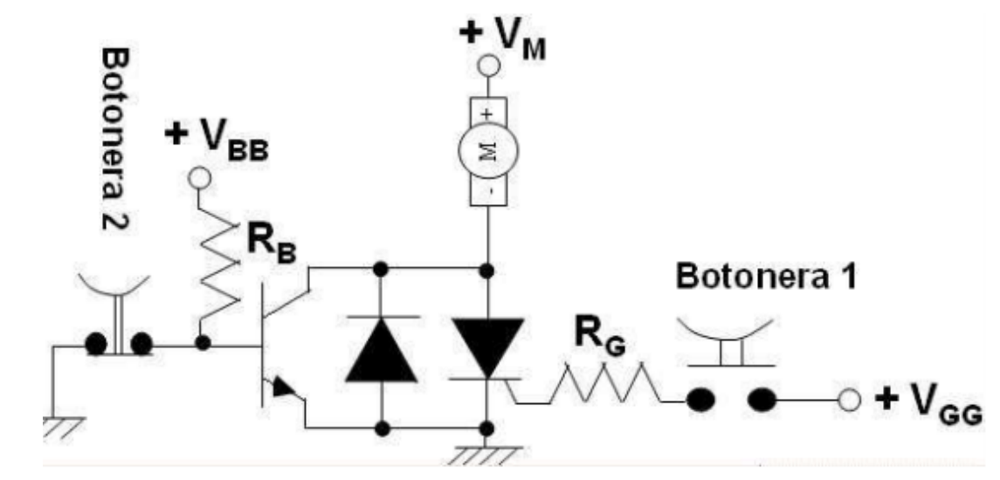 </span> --- ## Ejercicio 1 <span style="font-size: 20.0pt; "> ¿Cuál sería la medición instantánea del amperímetro en cada caso? 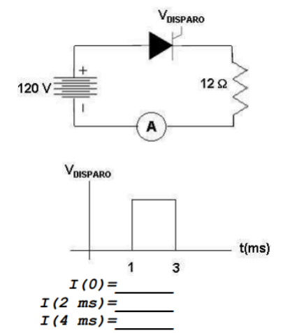 </span> --- ## Ejercicio 2 <span style="font-size: 20.0pt; "> ¿Cuál es el valor mayor de la resistencia R para que el SCR no se abra? 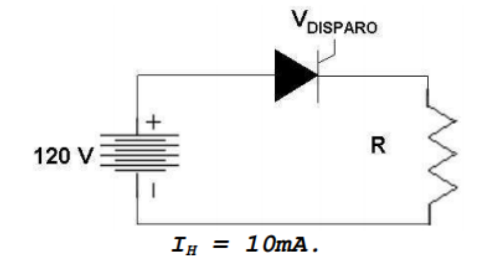 </span>